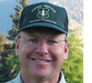

|
|
|
By their very nature, watersheds embody the multi-jurisdiction, competing-demand issues Carpe Diem Project members grapple with in
so many contexts. As the Project's Headwaters policy brief
points out, most of our water in the West comes from mountain watersheds. For that reason we have made the Healthy Headwaters
initiative one of Carpe Diem's three lead initiatives for 2010. This month, we talk about the headwaters and climate change with
two Carpe Diem Project members. Sarah Bates is a Senior Fellow at the Center for Natural Resources and Environmental Policy at
the University of Montana and a Carpe Diem Project Team member. Rick Cables is Regional Forester for the US Forest
Service Rocky Mountain Region and a Carpe Diem Project Advisor.
Kimery Wiltshire
Director, Carpe Diem Project
|
AN INTERVIEW WITH SARAH BATES
Back to First Principles
"We need to be
more explicit about
the fact that land
management is
water management."
|
|
|
AN INTERVIEW WITH RICK CABLES
Making the Watershed Connection
|

"A lot of people do not understand that the health of the watershed is critical to
water resources. We want to connect the water customers to their watershed."
|
|
|
Q: In the Carpe Diem Project Headwaters policy brief that you wrote last summer you said we have a window of
opportunity now to make progress toward water and public land resource management policies that integrate the best
available science and acknowledge the new challenges posed by climate change and other pressures on public lands
and water resources. Do you still feel we have that opportunity?
Read more.
|
|
Q: You've pointed out the enormous economic value of water that originates in the National Forests of the
Rocky Mountain Region. And you've also noted that about three million acres of Forest Service land alone have been
affected by the mountain bark beetle. How do you expect the forest damage caused by the beetle to affect efforts not
just to maintain but restore the healthy headwaters needed for our water supplies?
Read more.
|
|
|